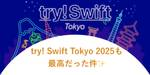

Yappli Tech Blog
https://tech.yappli.io/
株式会社ヤプリの開発メンバーによるブログです。最新の技術情報からチーム・働き方に関するテーマまで、日々の熱い想いを持って発信していきます。
フィード

try! Swift Tokyo 2025も最高だった件✨ 1
1
Yappli Tech Blog
はじめに こんにちは！🌸 ヤプリでiOSエンジニアをしています、白数 (@cychow_app) です！ 今年も4/9 (水) ~ 4/11 (金) の期間で try! Swift Tokyo 2025 が開催され、3日間参加してきました。 try! Swift Tokyoへの参加は今回が2回目となり、昨年のtry! Swift Tokyo 2024は渋谷で開催されていたのですが、今年は会場が立川に移動し、会場の規模も大きくなっていました！ 会場がデカい.....!? 今年のtry! Swift Tokyo 2025でも、世界で活躍されている著名な方々が登壇されており、すべてのセッションが非常…
7日前

今年はさらにパワーアップ、try! Swift Tokyo 2025 の参加レポート
Yappli Tech Blog
はじめに iOS エンジニアの 菅（@Nao_RandD | ナオランド）です。 先週、try! Swift Tokyo 2025に現地参加してきました。 現地での参加は2回目です。 去年からさらにパワーアップしていた魅力と、セッションの感想についてご紹介できればと思います。 Riko ちゃんがお出迎え はじめに 概要 開催概要 try! Swiftの特徴 新しい魅力３選 Flittoによるリアルタイム翻訳 新たな会場！立川ステージガーデン 爆速のアーカイブ公開 セッション紹介 作って学ぶ正規表現 -やさしいSwift Regex入門-（kishikawa katsumi） セッション概要 主…
1ヶ月前
BigQueryで複数プロジェクトのテーブル参照状況をINFORMATION_SCHEMAから調べてLooker Studioでダッシュボード化してみた
Yappli Tech Blog
こんにちは！データサイエンス室（以下、DS室）の山本です（@__Y4M4MOTO__）です。 BigQueryにおいて複数のGoogle Cloudプロジェクト（以下、GCプロジェクト）に存在するテーブルの参照状況をINFORMATION_SCHEMAから調査し、Looker Studioでダッシュボード化してみたので、その内容を記載します。 背景 方法 STEP 1｜TABLESビューからのテーブル一覧作成 STEP 2｜JOBSビューとの結合による参照状況の集計 どのテーブルが何回参照されてるかのマスタ（information_schema_jobs_referenced_tables） …
1ヶ月前
JaSST '25 Tokyo に今年も行ってみた
Yappli Tech Blog
はじめに JaSSTとは 当日の様子 参加メンバーから 日沢 Agile TPIを活用した品質改善事例 Agile TPIとは 感じたこと 山口 「保証するための品質基準」がQAには必要か？ 現場からお届けします 〜モバイルアプリテストにおける工夫と挑戦〜 今西 "E2Eテスト自動化の目的を常に考えて軌道修正すること"について "QAに求められている品質基準を十分に理解すること"について 最後に PR はじめに ヤプリQAの日沢です。 去年の続き、今年もヤプリQAたちがJaSST '25 Tokyoに行ってきました！ ちなみに去年のブログはこちらです。 JaSST24 Tokyoに参加しました…
1ヶ月前
特定のメソッド内で特定のメソッドを呼んでいるかチェックするPHPStanのカスタムルールを作成する方法
Yappli Tech Blog
はじめに カスタムルールを作成した背景 作成したカスタムルール 補足 一旦変数に入れられるケース インスタンス化直後にメソッドチェーンされないケース カスタムルールのテスト MustCallExpireAfterRuleTest.php NoMissingExpireAfter.php MethodCallWithoutOverlapping.php MissingExpireAfter.php まとめ さいごに はじめに こんにちは。サーバーサイドエンジニアの佐野きよ（@Kiyo_Karl2）です。 今回とある理由で、特定のメソッド内で特定のメソッドを呼んでいるかチェックするPHPStanの…
1ヶ月前
新卒SREとしてヤプリで1年間働いてみて
Yappli Tech Blog
はじめに はじめまして、ヤプリの眞田です。 私は2024年4月に新卒SREとしてヤプリに入社しました。 本日は2025年3月31日で入社から1年が経過したことを記念して、私の新卒SREとしての1年間を振り返りたいと思います。 はじめに なぜ新卒SREとしてキャリアを選んだのか 入社前の期待と実務経験から得た認識 1年間で担当したプロジェクト・業務 初めて任された仕事とその成果 (2Q) 改善に取り組んだこと （3Q, 4Q, 2025年1Q）（インフラ最適化、自動化、監視強化など） 特に苦労したこと・その乗り越え方 ヤプリSREならではのやりがいや醍醐味 今後の目標 おわりに なぜ新卒SREと…
1ヶ月前
LaravelのSanctumで一部のアクセスで401エラーが発生してしまった原因と対処法
Yappli Tech Blog
はじめに 事象 原因 レプリケーション遅延による影響だった stickyオプションは同一リクエスト上でしか有効にならない 対処方法 類似ケース まとめ さいごに はじめに こんにちは。サーバーサイドエンジニアの佐野きよ（@Kiyo_Karl2）です。 ヤプリの一部のサービスでは、APIトークン（BearerToken）を使った認証処理にSanctumを利用しています。 この認証処理において、一部のアクセスで401エラーが発生するという事象に遭遇したため、その原因と対処方法について紹介いたします。 事象 調査したところ、具体的には以下のような事象であることがわかりました。 アクセストークン発行A…
1ヶ月前
フラーさんと開発統括本部LT大会でワイワイした話
Yappli Tech Blog
こんにちは！データサイエンス室の山本（ @__Y4M4MOTO__ ）です。 開発統括本部では四半期ごとにLT大会を開催しています。今回はなんと、昨年にヤプリと資本業務提供したフラー株式会社（以下、「フラーさん」）のエンジニアの方々をお招きして一緒にワイワイしました！ この記事ではその様子をご紹介します！ どんな会？ LT大会（Lightning Talk大会）は、 一人約5分で自由なテーマに基づいて発表していくイベント です。ヤプリの開発統括本部では、以下のルールで開催しています： 任意参加 📝 ... どの部署からでも自由に参加できます。 発表時間は5分 ⏰ ... コンパクトに話すのがル…
2ヶ月前
モバイルアプリエンジニアを志望する学生さん、ヤプリを体験してみてください！
Yappli Tech Blog
こんにちは！ヤプリでAndroidエンジニアとして１ヶ月インターンに参加させていただきました、寺澤といいます☺️ 短い期間でしたが、ヤプリでのインターンを経験して感じたことを素直に書いていこうと思います！ 目次 Yappliについて インターンで取り組んだこと アプリ研修 遊撃チームで改善チケットの対応 社内アプリのネイティブ化 社員の方との1on1 アプリエンジニア志望の学生にヤプリを体験してほしい 多くのユーザーにアプリを届けられるというやりがい 汎用性という複雑さへの挑戦 さいごに Yappliについて Yappliは、プログラミング不要でネイティブアプリを開発・運用できる ノーコード型…
2ヶ月前
ヤプリに入社〜1年くらいでやったことを振り返ってみた
Yappli Tech Blog
こんにちは、Androidエンジニアの伊藤です😆 2024年の4月にヤプリに中途で入社し、現在（2025/02/19）で10ヶ月半が経ち、いろいろな経験を積ませてもらいました。 最初は新しい環境に不安もありましたが、人間関係に関してヤプリは懇親会やミーティングの場でみんなが気負わずフランクに話せる雰囲気があり、すぐに打ち解けられたのが印象的でした。 また、個人の裁量が尊重されつつもチーム間でのサポートが手厚く、常に新しい機能や修正が素早く取り込まれていくスピード感に毎回驚かされています！ さて、今回は入社から現在までのざっくりとしたスケジュールと、特に印象に残ったエピソードを通して、ヤプリでの…
3ヶ月前
アプリ起動時に叩かれるAPIを再構築（リプレイス）した話
Yappli Tech Blog
はじめに リプレイスの背景 リプレイス方法 設計 既存のAPIを読み解く APIの責務を決める アプリ起動時の設定取得用の汎用的なAPI 機能やレイアウト情報取得API レスポンス内容を決める 決めた内容について、周りに共有して合意をとる 実装 まずintegration testを実装する 処理のまとまりごとに細かくPRを出す キャッシュ戦略を考える 結果 よかったこと 難しかったこと 最後に はじめに こんにちは、サーバーサイドエンジニアの中川（@tkdev0728）です。 本記事を書いているのが2月なのですが、絶賛足先が冷える点に悩んでいます。冷え性改善のおすすめグッズがあればぜひコメン…
3ヶ月前
#みん強 に『プロダクト観点で考えるデータ基盤の育成戦略』という題で登壇しました！
Yappli Tech Blog
こんにちは！データサイエンス室（以下、DS室）の山本です（@__Y4M4MOTO__）です。 先日1/30(木)に開催された「みんなの考えた最強のデータアーキテクチャ〜2025もやってきましょうSP！」に表題のタイトルで登壇させていただきました！ datatech-jp.connpass.com この記事では、登壇してみてのレポートを記していきます。 各種資料 私の登壇資料 配信アーカイブ Xポストまとめ みん強に応募しようと思ったきっかけ 資料を作成してみての感想 登壇してみての感想 おまけ: 地味な個人的WIN まとめ 各種資料 私の登壇資料 speakerdeck.com 配信アーカイブ…
3ヶ月前
macOSからAmazon LinuxにGoアプリケーションをクロスコンパイル
Yappli Tech Blog
はじめに サーバーサイドエンジニアの加納です！ 皆さんは普段からGoを利用して色々なアプリケーションを作成していますか？ 自分は、Goが好きなのでよくGoで色々なアプリケーションを実装しています！ 今回は、macOSの開発環境からAmazon Linux向けにGo CGOアプリケーションをクロスコンパイルする実装について解説します。具体的には、go-sqlite3とMySQLを利用するバッチアプリケーションを例に、クロスコンパイルの実装方法と直面した課題について共有します。 背景と課題 今回実行したbatchでは以下の要件がありました： go-sqlite3を使用したローカルデータの操作 My…
3ヶ月前
【カンファレンス初参加】SRE Kaigi 2025 参加レポート
Yappli Tech Blog
はじめに はじめまして、ヤプリで新卒SREをしています。眞田です。 今回はSRE Kaigi 2025に参加したので、個人的に面白かったセッションについて話します。 自分自身、そもそもこういったテックカンファレンスに初参加ということもあり、とても緊張していました。 しかし終わってみればとても楽しい経験をさせていただき、執筆中の今でもまだ余韻が残っています。 このような体験を他の方々にもしてほしいという気持ちから本ブログを書いています。 最後には参加してみての感想も書いてますので、お時間ある方はご一読いただけると嬉しいです。 面白かった・興味のある内容だったセッション たくさんの面白いセッション…
4ヶ月前
生成AIコードレビューの導入から見えてきた効果と課題
Yappli Tech Blog
この記事では、ヤプリでなぜ・どのように生成AIコードレビューを導入したのかを紹介し、導入後のアンケート結果から見えてきた成果や課題もお伝えしていきます。
4ヶ月前
Translation APIとAccessibility APIを使ってSlackやDiscordのメッセージを自動翻訳する
Yappli Tech Blog
iOS 18とmacOS Sequoiaでは新しくTranslation APIが利用できるようになりました。それなりの品質の翻訳APIが無料で使い放題というのは非常にお得で、おそらく代替になるものは他に存在しません。ですので活用できるところがあれば積極的に使っていくといいでしょう。 今回はこのTranslation APIとAccessibility APIを組み合わせて、SlackやDiscordのメッセージを自動的に翻訳するアプリケーションを作成したので、その内容をご紹介します。 OSSライブラリのコミュニティなど外国語が主に使われるサーバーの話題を追いかけるのに便利です。Botではなく…
4ヶ月前
Ink APIさわってみた
Yappli Tech Blog
こんにちは、Androidグループに所属しているにゃふんた（nyafunta9858）です。 今回は、なかなか試せていなかったAndroidXの新しいライブラリを弊社のYappdateDayを使って触ってみましたので、そちらについてお話してみたいと思います。 YappdateDayについて 今回試したライブラリ 手書き入力を試す、その前に 環境構築 実際に手書き入力を試してみた 1. 手書き入力を受け付けるViewのセットアップ 2. MotionEvent.ACTION_DOWN受信後、手書き入力の開始をAPIへ通知 3. MotionEvent.ACTION_MOVE受信後、手書き入力の更…
4ヶ月前
SSL証明書をTrust Storeに登録し、HTTPS通信における証明書の正当性検証について学ぶ
Yappli Tech Blog
こんにちは、サーバーサイドグループのマネージャーの鬼木です。 今回、直近でSSL証明書を取り扱うタスクを担当し、HTTPS通信について学びになることが多かったのでその知見共有の記事になります。 SSLの仕組み 本題に入る前に簡単にSSLの仕組みについて説明したいと思います。 HTTPS通信をする際、TLSプロトコルを用いてクライアント・サーバー間で通信を行います。HTTPS通信はHTTP通信に比べて暗号化通信ができることが特長ですが、暗号化通信成立までにいくつかの工程を挟みます。 その中でクライアント側は通信するサーバーの正当性検証を行います。 正当性検証 サーバー側はHTTPS通信を行うにあ…
5ヶ月前
やらない後悔より、やって大成功！アプリ申請前にやるべき3つのポイント 〜iOS無限却下脱却編〜
Yappli Tech Blog
こんにちは お笑いに全く詳しくないのにM-1に感化されているアプリ申請グループの野村です。 ヤプリでは数多くのお客様にご利用いただいており、その数は800アプリを超えます。 アプリをApple社、Google社に審査提出する回数も多く、今年は1700件を超えました。 ヤプリではこの審査提出を代行しています。数多くのアプリをスムーズにリリースするためには、いかに審査却下(リジェクト)を回避できるかという部分が重要です。過去のノウハウを活かす事で今年は審査通過率が月平均85%を超え、一番高かった月では92%までになりました。 今回はリジェクトになりやすいポイント3点を回避方法と共に紹介します。 有…
5ヶ月前
「ヤプリQA課題の見える化」という題で登壇しました #Yappli Tech Conference 2024
Yappli Tech Blog
この記事は Yappli Advent Calendar 2024（1枚目）の23日目の記事です アーカイブ スライド 準備編 発表(収録)編 まとめ PR ヤプリでQAエンジニアをしている山口（@Myamaguchi75201）です。 今年の10月17日に開催された「Yappli Tech Conference 2024」にて、QAグループとしては2回目となる登壇をしてきました。 アーカイブ youtu.be スライド speakerdeck.com 今回は発表準備から当日の登壇の様子についてレポートします。 準備編 まず開催にあたり、今年はQAとして何をどんな内容で発表するのかを、事前にQ…
5ヶ月前
2回目の addSublayer
Yappli Tech Blog
こんにちは、iOSエンジニアの西村です。 皆さんは、一度addSubviewで追加されたViewを、別のViewに再度addSubviewすると、そのViewが入れ替わる仕組みをご存知でしょうか？ドキュメントにも記載があるのでご存じの方はいらっしゃるかと思います。 addSubview(_:) | Apple Developer Documentation Views can have only one superview. If view already has a superview and that view is not the receiver, this method remove…
5ヶ月前
Laravelのジョブですべてのリトライに失敗したらエラー通知させる方法
Yappli Tech Blog
はじめに 【前提】Laravelのジョブの失敗時の挙動について すべてのリトライに失敗したらエラー通知させる方法 リトライしたい例外をcatch リトライさせるためだけの独自例外をつくる まとめ さいごに はじめに こんにちは。サーバーサイドエンジニアの佐野きよ(@Kiyo_Karl2)です。 弊社では一部のサービスで分析のためRedshiftを利用しています。利用シーンとしては、例えば「ユーザーにより商品の購買が行なわれたときにジョブを利用してこの購買データをバックグラウンドでRedshiftへ投入する」といった感じです。(本当は脱Redshiftしたい・・) しかし、Redshiftではデ…
5ヶ月前
【Go】イテレータを用いた二分木探索を使ってクリスマスツリーを描いて遊ぶ
Yappli Tech Blog
はじめに アドベントカレンダーでクリスマスの日に順番が回ってきたので、クリスマスツリーを描きます🌲🎅 こんにちは、株式会社ヤプリ サーバーサイドエンジニアの坂本(@mohvuba)です。 なぜクリスマスツリー？ ヤプリでは月に1回程度、Go界隈で有名なtenntennさんをお招きしてGoの勉強会を開催しています。 その中でここ最近、ツリー構造のオブジェクトの二分木探索をイテレータを用いて行うという内容のものがありました。 冒頭で書いたように、私がアドベントカレンダーで25日の担当になり、 12/25といえばクリスマス、クリスマスといえばクリスマスツリー！ ということで、タイトル通りの記事を書く…
5ヶ月前
OpenSSLを1.0.2からバージョンアップしたら本番環境でSOAP通信できなくなった話
Yappli Tech Blog
この記事は Yappli Advent Calendar 2024 の8日目の記事です。 はじめに 発生した事象の詳細と原因 なぜ本番環境でのみ発生していたのか? testssl.sh 本番 ステージング どのように解決したか まとめ さいごに はじめに こんにちは。サーバーサイドエンジニアの佐野きよ(@Kiyo_Karl2)です。 先月PHP + Laravel on EC2で動いているサービスをECS/Fargateへ移行したのですが、その際にサーバーにインストールされているOpenSSLのバージョンが1.0.2と古いバージョンだったのでついでにアップデートを実施しました。 アップデートを…
5ヶ月前
ユニバーサルリンクの仕組みと実装方法
Yappli Tech Blog
こんにちは、iOSエンジニアの西村です。 iPhoneでネットサーフィン中にウェブサイトのリンクをタップしたら、アプリが起動してコンテンツが表示された経験はないでしょうか？これはユニバーサルリンクという技術で実現されています。 本記事では、ユニバーサルリンクの基本的な仕組み、実装の流れ、そして開発時に役立つ情報について紹介していきます。 こちらは ヤプリ #1 Advent Calendar 2024 21日目の記事になります！ ユニバーサルリンクの仕組み AASA ファイルとは？ ユニバーサルリンクを使用するまでの流れ 実装の流れ サーバー側の対応 AASA ファイルの用意 パターンの定義 …
5ヶ月前
【iPadOS 18】Tab barのUI / UXの大幅アップデート
Yappli Tech Blog
はじめに iPadOS 18のTab barについて WWDC24にてTab barの更新が発表 Human Interface Guidelineでは… 新たなTab barの構築方法 SwiftUIによるTab barの構築 UIKitによるTab barの構築 最後に はじめに みなさん、こんにちは！ヤプリでiOSエンジニアをしております、白数 (@cychow_app) です。 本記事は「ヤプリ Advent Calendar 2024」のDay 17となります！ 本記事では、iPadOS 18から大きく変更されたTab barに関して、以下の内容に焦点を当てて解説していきます。 WW…
5ヶ月前
PC が壊れた・・・！のでどうしても iPad だけで開発したい！！（with GitHub Codespaces）
Yappli Tech Blog
こんにちは。iOS エンジニアの kamimi です。🌞 いきなり個人的な話で恐縮ですが、最近 PC（Macbook）が壊れました・・・！💥 「やばい・・・仕事どうするんだ・・・」 仕事に関してはたいていまずは会社から代替機を借りるという選択肢があると思うのですが、私の場合会社との物理的距離があまりにも大きいために不可能でした。。 となると今いる場所、今持っているものでどうにかするしかない。。！ということで必須に検討した結果、手元にある iPad での開発に挑戦しました！ ということで、 はじまりはじまり。 いきなりですが結論だけ知りたい人のために先にお伝えすると、 新規かつ小規模な iOS …
5ヶ月前
プログラミング初心者がAndroidアプリ制作にチャレンジした話
Yappli Tech Blog
こんにちは！ ヤプリのアプリ申請チームのあきなです。 この記事は Yappli Advent Calendar 2024（2枚目）の21日目の記事です！ 自己紹介とチャレンジの背景 普段、私は「アプリ申請チーム」という名前の通り、アプリの申請作業をメインに担当しています。 いつもの業務に関わる記事もアドベントカレンダー1日目に書いているので、ご興味がある方はこちらも見てみてください！ tech.yappli.io 業務効率化のために、Google Apps Script（GAS）やJavaScriptを使うことはありますが、それ以外の技術にはあまり触れたことがありません。 今回アプリを作ってみ…
5ヶ月前
Aurora MySQL 3 アップグレード時の検証まわりのおはなし
Yappli Tech Blog
Aurora MySQL 3 へのアップグレードで、ジェネラルログやスロークエリーを使って検証したあれこれについて
5ヶ月前
内製受付アプリの API を Cloud Run × Swift で実装してみた
Yappli Tech Blog
こんにちは、ヤプリで iOS エンジニアをしている三宅 (@tsushi130) です。 これまで SaaS を利用していた受付アプリを内製化した iPad アプリに移行する方針となり、その API を Cloud Run × Swift を利用して実装しました。 背景 2020 年にリモートワークの社員が増加しつつ来客数も減少している中で、年間 100 万円以上もかかっていた受付アプリのコストを削減すべく、内製化した受付アプリのリリースに向けて動き出したことが背景です。 技術選定 社内アプリということとアプリチーム主導で進めるということで、触れてみたい技術や新しい技術を取り入れつつ、新技術の…
5ヶ月前